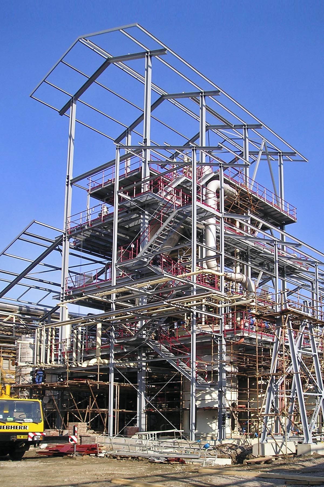
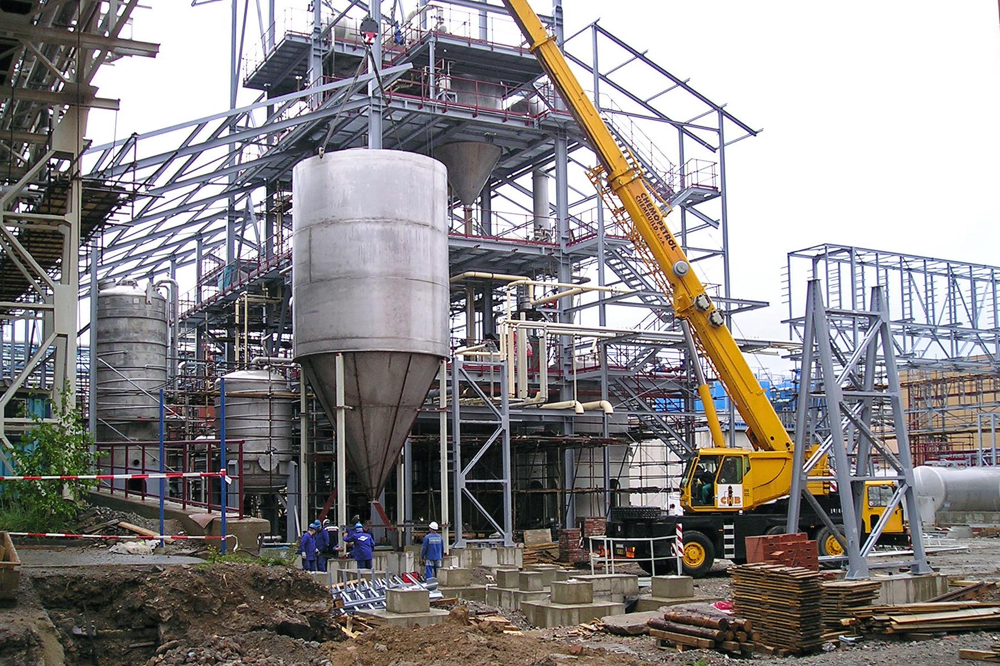
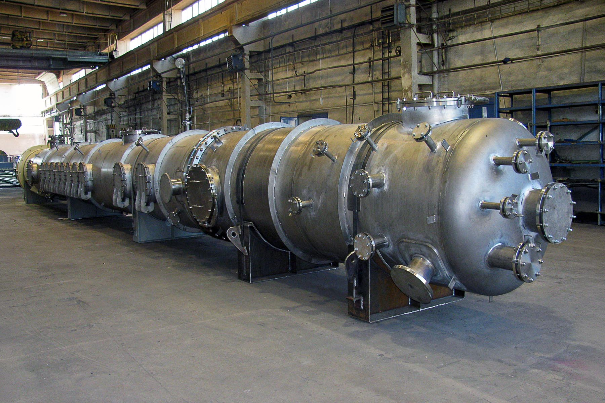
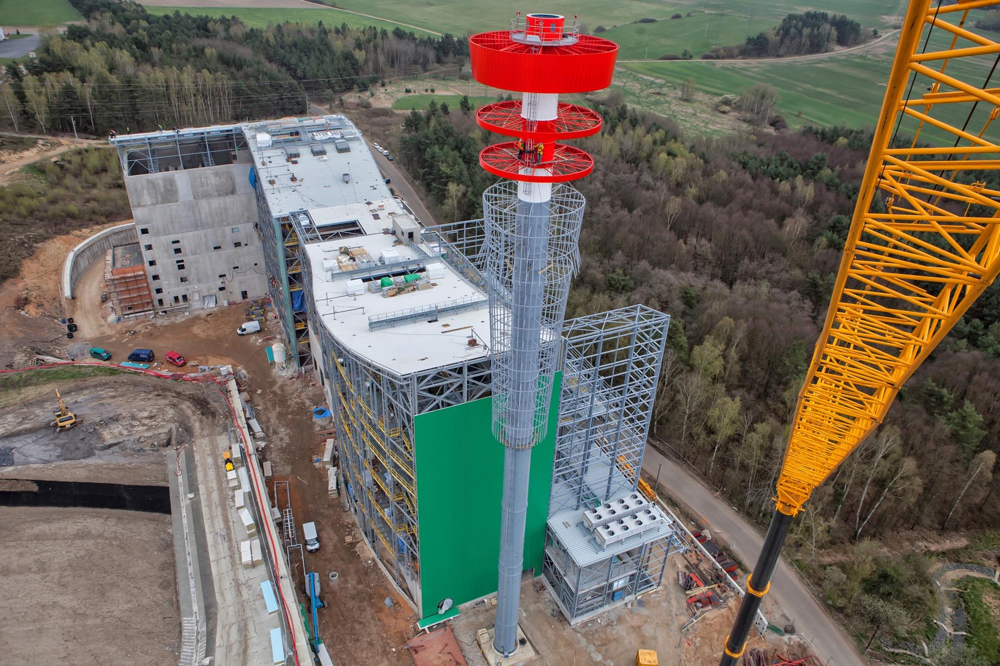
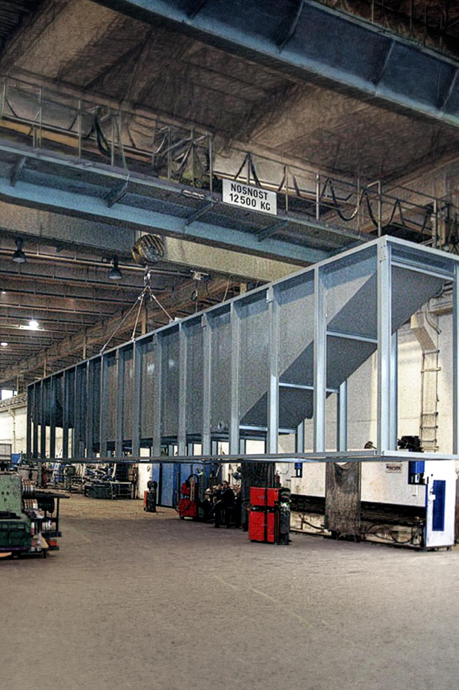
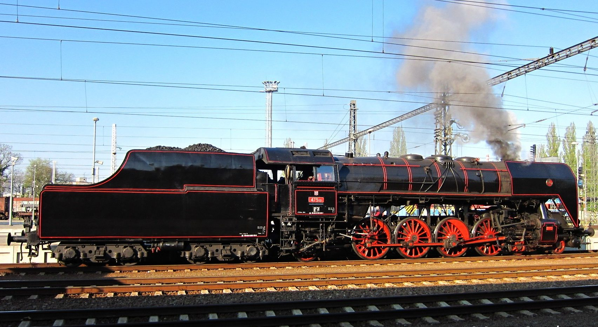
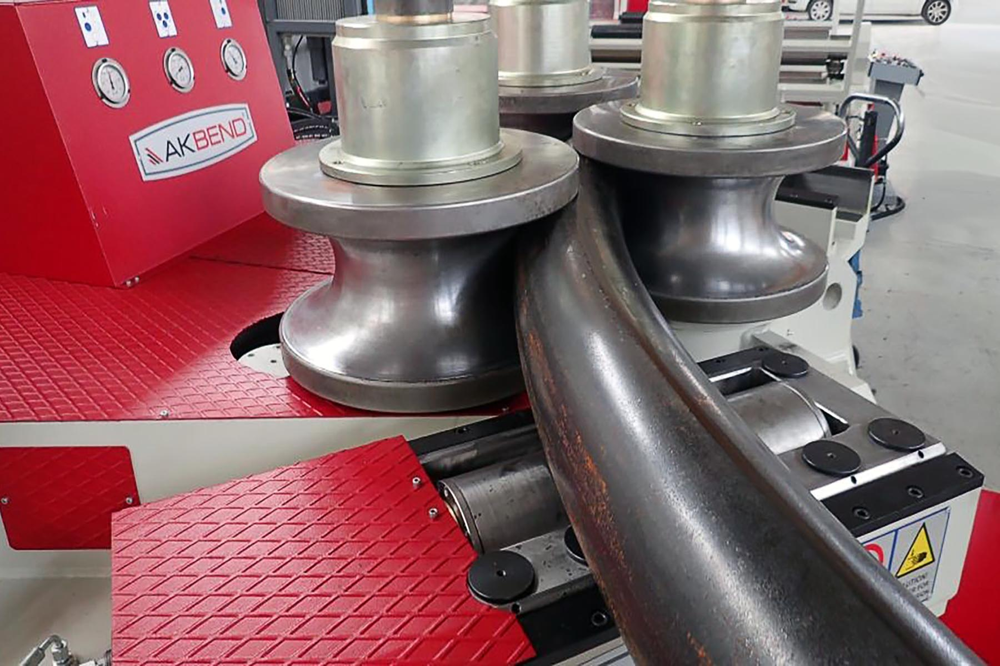

Tlakové nádoby, procesní aparáty a nerezové celky
Společnost PREST PŘEROV a.s. je předním certifikovaným dodavatelem vyhrazených tlakových zařízení, kolon, výměníků, technologických van a svařenců pro chemický, petrochemický, energetický a kolejový průmysl v celé Evropě.

Specializované výrobní divize
Přepínejte mezi klíčovými obory a prozkoumejte technologické možnosti a realizované aparáty společnosti PREST PŘEROV a.s.

Tlakové nádoby a chemické kolony
Vyrábíme vyhrazená tlaková zařízení pro chemický, energetický a zpracovatelský průmysl. Návrh a výroba probíhá v souladu s evropskými normami ČSN EN 13445, německým předpisem AD 2000 Merkblatt nebo americkým standardem ASME Code.

Aparatura a potrubí z ušlechtilých nerezových ocelí
Kompletní dodávky technologických aparátů, potrubních rozvodů a výměníků tepla z austenitických nerezových ocelí AISI 304, AISI 316L i duplexních materiálů pro farmacii a chemii.

Absorbéry, cyklony a kouřovodné trasy
Výroba velkorozměrových spalinových kanálů, potrubních tras, odprašovacích cyklonů a absorpčních věží pro projekty odsiřování a denitrifikace uhelných i plynových elektráren.

Mořicí, odmašťovací a technologické vany
Konstrukce tuhých ocelových a nerezových van pro povrchové úpravy kovů, zinkovny a galvanické linky. Možnost integrace vnitřních topných registrů a míchacích okruhů.

Generální opravy parních kotlů a kolejových vozidel
Unikátní technologické know-how pro výrobu a rekonstrukce nýtovaných i svařovaných parních kotlů historických lokomotiv (např. řady 475.101 Šlechtična) a cisteren nákladních vozů dle předpisů ČD V 95/5 a RID.

CNC skružování a ohýbání tlustých plechů
Přesné zakružování válcových a kónických plášťů aparátů na hydraulických čtyřválcových zakružovačkách s předohybem obou konců bez rovné plošky.
Mezinárodní certifikace a oprávnění
Společnost PREST PŘEROV a.s. drží nejvyšší možné svářečské a průmyslové certifikace pro evropský trh.
Certifikovaný systém řízení jakosti výroby aparátů a tlakových zařízení platný do roku 2028.
Splnění komplexních požadavků na tavné svařování kovových materiálů dle mezinárodní normy.
Nejvyšší prováděcí třída ocelových konstrukcí pro dynamicky a seismicky namáhané celky.
Certifikace pro výrobu a rekonstrukce tlakových nádob a dílů železničních kolejových vozidel.
Osvědčení o technické způsobilosti dodavatele pro provozování a opravy drážních zařízení.
Oprávnění výrobce tlakových nádrží pro železniční a silniční přepravu nebezpečných látek.
Dlouhodobá důvěra průmyslových lídrů
Projektoví garanti a kontaktní osoby
Zkušení projektoví inženýři s mezinárodní jazykovou výbavou (angličtina, němčina) pro bezproblémový průběh zakázky.
Ing. Vladimír Grepl
Svářečský dozor IWE, řízení kapacit strojírenské haly a dozor nad skružováním.
Ing. Marek Benda
Řízení mezinárodních aparátových projektů, komunikace se zahraničními zákazníky v angličtině.
Ing. Petr Kašpárek
Technicko-obchodní řízení zakázek pro německy mluvící trhy (DACH region).
Václav Pavlík
Defektoskopie svarů, přejímky aparátů s inspekčními orgány (TÜV, TIČR, ČD) a strojní opracování.
Jaroslav Schwarz
Nesting výpalků, převod CAD dat do výrobních programů a příprava plechů.
Vendula Žádníková
Smluvní administrativa, fakturace a personální řízení společnosti.
Sídlo a výrobní areál
Výstavní 109/20, 750 02 Přerov
nábř. Dr. Edvarda Beneše 1170/24, Přerov I-Město, 750 02 Přerov
IČO: 25830678 • DIČ: CZ25830678
Technická poptávka výroby
Zašlete nám výkresovou dokumentaci nebo specifikaci aparátu. Naši technologové posoudí výrobní možnosti a připraví nabídku.